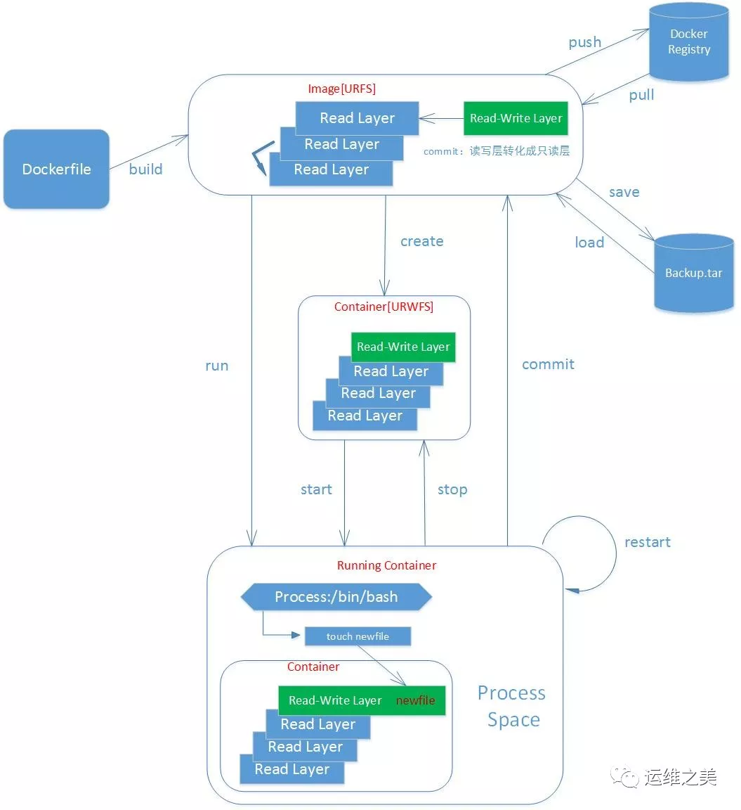
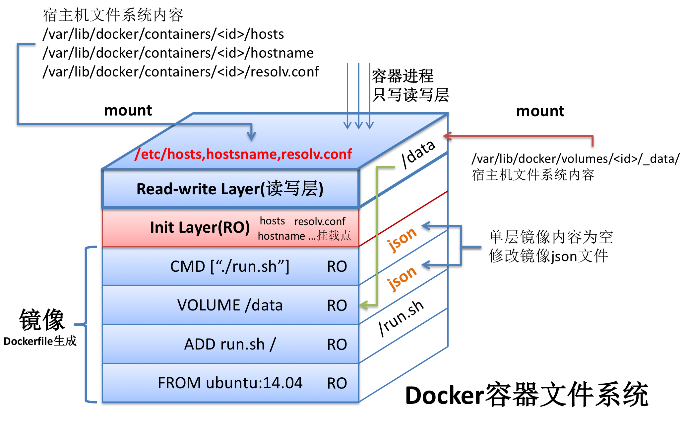

Docker
Concepts

Images
- 一个只读模板，可以用来创建容器，一个镜像可以创建多个容器
- Docker 提供了一个很简单的机制来创建和更新现有的镜像，甚至可以直接从其他人那里获取做好的镜像直接使用

- docker 镜像代表了容器的文件系统里的内容，是容器的基础，镜像一般是通过 Dockerfile 生成的
- docker 的镜像是分层的，所有的镜像（除了基础镜像）都是在之前镜像的基础上加上自己这层的内容生成的
- 每一层镜像的元数据都是存在 json 文件中的，除了静态的文件系统之外，还会包含动态的数据
Commands
Search on Docker storedocker search mysql
Pull an image from Docker storedocker pull mysql:latest
Push an image to Docker storedocker push
List all downloaded imagesdocker images
Delete an imagedocker rmi mysqldocker rmi mysql tomcat
Delete all iamgesdocker rmi $(docker images -q)
Build an image from Dockerfiledocker build
Tag an imagedocker tag
Container
- 容器是从镜像创建的运行实例，也就是镜像启动后的一个实例称为容器，是独立运行的一个或一组应用。
- docker 利用容器来运行应用，他可以被启动、开始、停止、删除，每个容器都是相互隔离的、保证安全的平台。
Commands
Create and Run a container from an imagedocker run --name container-name -d image-name
List all running containersdocker ps
Stop a running containerdocker stop container-name/container-id
Force stop a running containerdocker kill container-name/container-id
docker stop: Stop a running container (send SIGTERM, and then SIGKILL after grace period) […] The main process inside the container will receive SIGTERM, and after a grace period, SIGKILL. [emphasis mine]
docker kill: Kill a running container (send SIGKILL, or specified signal) […] The main process inside the container will be sent SIGKILL, or any signal specified with option –signal. [emphasis mine]
Create a container but do not run itdocker create -t -i fedora bash
Start a containerdocker start container-name/container-id
Restart a containerdocker restart container-name/container-id
Delete a containerdocker rm container-id
Delete all containersdocker rm $(docker ps -a -q )
Check logsdocker logs container-id/container-name
Attach to a running containerdocker attach container-id
Run a command on a running containerdocker exec -it container-id/container-name bash
List running processes on a containerdocker top container-id
Inspect a containerdocker insepct container-id
Copy file from host to containerdocker cp 文件 container-id:目标文件/文件夹docker cp /tmp/suzhuji.txt 7f237caad43b:/tmp
Copy file from container to hostdocker cp container-id:目标文件/文件夹 宿主机目标文件/文件夹docker cp 7f237caad43b:/tmp/yum.log /tmp
Resoisitory
- 仓库是集中存放镜像文件的场所，类似 git 代码仓库等。
- 仓库（Respository）和仓库注册服务器（Registry）是有区别的。仓库注册服务器一般存放多个仓库，每个仓库又有多个镜像，每个镜像又有不同的标签（tag）。
- 仓库分为公开仓库（public）和私有仓库（private）两种形式。
- 当创建好自己的镜像后，可以通过 push 命令把它上传到公开或私有仓库。
Port mappping
1 | # Find IP address of container with ID <container_id> 通过容器 id 获取 ip |
自动映射端口
-P 使用时需要指定 –expose 选项，指定需要对外提供服务的端口
$ sudo docker run -t -P --expose 22 --name server ubuntu:14.04
使用 docker run -P 自动绑定所有对外提供服务的容器端口，映射的端口将会从没有使用的端口池中 (49000..49900) 自动选择，你可以通过 docker ps 、docker inspect <container_id> 或者 docker port <container_id>
绑定端口到指定接口
$ sudo docker run -p [([<host_interface>:[host_port]])|(<host_port>):]<container_port>[/udp] <image> <cmd>
默认不指定绑定 ip 则监听所有网络接口。
绑定 TCP 端口1
2
3
4
5
6
7
8# Bind TCP port 8080 of the container to TCP port 80 on 127.0.0.1 of the host machine.
$ sudo docker run -p 127.0.0.1:80:8080 <image> <cmd>
# Bind TCP port 8080 of the container to a dynamically allocated TCP port on 127.0.0.1 of the host machine.
$ sudo docker run -p 127.0.0.1::8080 <image> <cmd>
# Bind TCP port 8080 of the container to TCP port 80 on all available interfaces of the host machine.
$ sudo docker run -p 80:8080 <image> <cmd>
# Bind TCP port 8080 of the container to a dynamically allocated TCP port on all available interfaces
$ sudo docker run -p 8080 <image> <cmd>
绑定 UDP 端口1
2# Bind UDP port 5353 of the container to UDP port 53 on 127.0.0.1 of the host machine.
$ sudo docker run -p 127.0.0.1:53:5353/udp <image> <cmd>
Networking
Docker 四种网络模式
host 模式
如果启动容器的时候使用 host 模式，那么这个容器将不会获得一个独立的 Network Namespace，而是和宿主机共用一个 Network Namespace。容器将不会虚拟出自己的网卡，配置自己的 IP 等，而是使用宿主机的 IP 和端口。
例如，我们在 10.10.101.105/24 的机器上用 host 模式启动一个含有 web 应用的 Docker 容器，监听 tcp 80 端口。当我们在容器中执行任何类似 ifconfig 命令查看网络环境时，看到的都是宿主机上的信息。而外界访问容器中的应用，则直接使用 10.10.101.105:80 即可，不用任何 NAT 转换，就如直接跑在宿主机中一样。但是，容器的其他方面，如文件系统、进程列表等还是和宿主机隔离的。
container 模式
这个模式指定新创建的容器和已经存在的一个容器共享一个 Network Namespace，而不是和宿主机共享。新创建的容器不会创建自己的网卡，配置自己的 IP，而是和一个指定的容器共享 IP、端口范围等。同样，两个容器除了网络方面，其他的如文件系统、进程列表等还是隔离的。两个容器的进程可以通过 lo 网卡设备通信。
none模式
这个模式和前两个不同。在这种模式下，Docker 容器拥有自己的 Network Namespace，但是，并不为 Docker容器进行任何网络配置。也就是说，这个 Docker 容器没有网卡、IP、路由等信息。需要我们自己为 Docker 容器添加网卡、配置 IP 等。
bridge模式
bridge 模式是 Docker 默认的网络设置，此模式会为每一个容器分配 Network Namespace、设置 IP 等，并将一个主机上的 Docker 容器连接到一个虚拟网桥上。当 Docker server 启动时，会在主机上创建一个名为 docker0 的虚拟网桥，此主机上启动的 Docker 容器会连接到这个虚拟网桥上。虚拟网桥的工作方式和物理交换机类似，这样主机上的所有容器就通过交换机连在了一个二层网络中。接下来就要为容器分配 IP 了，Docker 会从 RFC1918 所定义的私有 IP 网段中，选择一个和宿主机不同的IP地址和子网分配给 docker0，连接到 docker0 的容器就从这个子网中选择一个未占用的 IP 使用。如一般 Docker 会使用 172.17.0.0/16 这个网段，并将 172.17.42.1/16 分配给 docker0 网桥（在主机上使用 ifconfig 命令是可以看到 docker0 的，可以认为它是网桥的管理接口，在宿主机上作为一块虚拟网卡使用）
Volume
Data Volume
数据卷的使用其实和 Linux 挂载文件目录是很相似的。简单来说，数据卷就是一个可以供容器使用的特殊目录。
sudo docker run -ti --name volume1 -v /myDir ubuntu:16.04 bashsudo docker run -ti --name volume2 -v /home/zsc/Music/:/myShare ubuntu:16.04 bashsudo docker run -ti --name volume2 -v /home/zsc/Music/:/myShare:ro ubuntu:16.04 bash
数据卷是用来持久化数据的，所以数据卷的生命周期独立于容器。所以在容器结束后数据卷并不会被删除，如果你希望删除数据卷，可以在使用 docker rm 命令删除容器的时候加上 -v 参数。
值得注意的是，如果你删除挂载某个数据卷的所有容器的同时没有使用 -v 参数清理这些容器挂载的数据卷，你之后再想清理这些数据卷会很麻烦，所以在你确定某个数据卷没有必要存在的时候，在删除最后一个挂载这个数据卷的容器的时候，使用 -v 参数删除这个数据卷。
Data Volume Container
所谓数据卷容器，其实就是一个普通的容器，只不过这个容器专门作为数据卷供其它容器挂载。
首先，在运行 docker run 指令的时候使用 -v 参数创建一个数据卷容器（这和我们之前创建数据卷的指令是一样的）：sudo docker run -ti -d -v /dataVolume --name v0 ubuntu:16.04
然后，创建一个新的容器挂载刚才创建的数据卷容器中的数据卷：使用 –volumes-from 参数sudo docker run -ti --volumes-from v0 --name v1 ubuntu:16.04 bash
Tricks
Clean disk space used by Docker
docker system dfdocker system prunedocker system prune -a